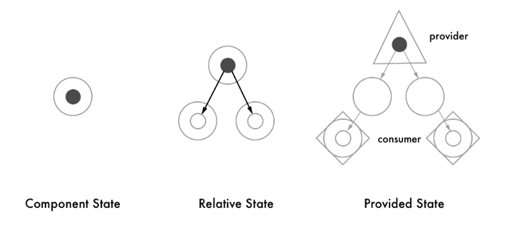

<!doctype html>
<html>
<head>
    <meta charset="utf-8">
    <meta name="viewport" content="width=device-width, initial-scale=1.0, maximum-scale=1.0, user-scalable=no">
    <link rel="stylesheet" href="reveal/css/reveal.css">
    <link rel="stylesheet" href="reveal/css/theme/kontur-light.css" id="theme">
    <!-- Theme used for syntax highlighting of code -->
    <link rel="stylesheet" href="reveal/css/highlight/idea-for-light.css">
    <link rel="stylesheet" href="reveal/css/highlight/darkula-for-dark.css">
    <!--[if lt IE 9]>
    <script src="reveal/js/html5shiv.js"></script>
    <![endif]-->
	<script defer src="reveal/js/head.min.js"></script>
	<script defer src="reveal/js/reveal.js"></script>
	<script defer src="reveal/initialize.js"></script>
	<script defer src="reveal/js/d3.min.js"></script>

    <style>
		.fragment-container {
			position: relative;
		}
		
		.fragment-container .fragment {
			position: absolute;
			top: 0px;
			width: 100%;
		}

        .tools.tools {
          margin: -30% auto 0;
          height: 100vh;
          display: block;
        }
    </style>
	
	<title>Кто хочет стать миллионером</title>
</head>
<body>

<div class="reveal"><div class="slides">

<section data-markdown><script type="text/template">

# Кто хочет стать миллионером

<p style="text-align: center;"><a href="https://github.com/DasPivas/millionaire-project">https://github.com/DasPivas/<b>millionaire-project</b></a></p>

</script></section>
<section data-markdown><script type="text/template">


##### Разработчики:
- Прядун Михаил
- Арслан Ишемгулов

##### Ментор
- Иван Зарудный

</script></section>
<section data-markdown><script type="text/template">

## 1. Процессы и технологии

***

## Процессы

* Очная встреча после выбора темы
* Онлайн встречи раз в неделю (чаще к дедлайну)
* Установили дедлайн для MVP
* Планирование - "скрам" доска в notion
    * Backlog -> Open -> Doing -> Review -> Done

***

### Используемые технологии

* React + TS + SCSS - с помощью create-react-app
* react-router-dom v6, classnames
* Eslint, Prettier
* Netlify

</script></section>
<section data-markdown><script type="text/template">

## 2. Какие были сложности?

***

# Сложностей не было

</script></section>


<!-- ************************************************* -->


<section data-markdown><script type="text/template">

## 8. Higher Order Components

***

*Higher Order Components (HOC)* — функции
вида Component → Component

Используя HOC, можно создавать новые улучшенные компоненты из обычных:
```js
const EnhancedComponent = enhance(JustComponent); // enhance — это HOC
```

***

### Что происходит в enhance

```js
function enhance(WrappedComponent) { // Функция принимает компонент...
    class Enhanced extends React.Component { // ...создает новый компонент...
      render() {
        // Свойства разделяются на две части
        const { value1, value2, ...rest } = this.props;
        return ( // Рендерим новый компонент
            <span className={value2}>
                { value1 }
                <WrappedComponent {...rest} isSelected={true} />
            </span>
        )}
    };

    return Enhanced; // ...и возвращает созданный компонент.
}
```

***

### Договоренности

1. Не мутировать исходный компонент
2. Все пропсы прокидывать дальше,
   кроме специально переданных для обертки
3. Задавать displayName: помогает при дебаге

```js
const wrappedName =
  WrappedComponent.displayName || WrappedComponent.name || 'Component';

Enhanced.displayName = `Enhanced(${wrappedName})`;

return Enhanced
```

***

### Forwarded Ref

```js
const someRef = React.createRef();
<EnhancedButton label="Click Me" ref={someRef} />;
```
```js
function enhance(WrappedComponent) {
  class Enhanced extends React.Component {
      render() {
        const {forwardedRef, ...rest} = this.props;
        return <WrappedComponent ref={forwardedRef} {...rest} />
      }
  }
  // React не передает значение атрибута "ref" в props обычных компонентов.
  // Но компонент React.forwardRef дает нам доступ к значению атрибута "ref"
  // и теперь это значение можно передать компоненту под другим именем.
  return React.forwardRef((props, ref) => {
    return <Enhanced {...props} forwardedRef={ref} />;
  });
}
```

***

### Задача 8. FormRow

***

### Примеры HOC

Роутер
```js
const NavbarWithRouter = withRouter(Navbar);
```

Relay
```js
const CommentWithRelay = Relay.createContainer(Comment, config);
```

Redux connect
```js
const ConnectedComment = connect(commentSelector, commentActions)(CommentList);
```

***

### Основные сценарии HOC

1. Добавление данных компоненту. Как в примерах с Роутером и Редаксом
2. Добавление разметки и методов. Как в решенной задачке

***

### Добавление разметки без логики

```js
const FormRow = ({label, children}) => {
  return (
    <div className="row">
      <div className="label">{label}</div>
      {children}
    </div>
  );
}
```

Также для расширения функциональности компонента можно использовать паттерн [RenderProps](https://ru.reactjs.org/docs/render-props.html)

***

### Wrapper Hell

```js
const withCustomization = WithCustomization(CheckForm);
const withIdentity = WithFormData(withCustomization, FormIdentity, false);
const withDocuments = WithFormData(withIdentity, FormDocuments, true);
const withSignStatement = WithFormData(withDocuments, SignStatementData, true);

const mapStateToProps = state => ({editableForm: state.forms.editableForm});
const mapDispatchToProps = dispatch => bindActionCreators({
  saveForm,
  changeFormStep,
  getFormData
}, dispatch);

export default connect(
  mapStateToProps,
  mapDispatchToProps
)(withSignStatement);
```

***

### Переиспользование логики в функциональных компонентах

При написании компонентов на *Hooks* можно создавать кастомные хуки, избегая при этом *WrapperHell*

```js
function useMyOwnHook(initialValue) {
  const [value, setValue] = useState(initialValue);
  const [value2, setValue2] = useState(initialValue);

  useEffect(() => {
    ...
    return () => {
      ...
    };
  }, []);

  return [value, value2];
}
```

</script></section>


<!-- ************************************************* -->


<section data-markdown><script type="text/template">

## 9. Context

***

<p style="text-align: center"></p>

***

Создание контекста:
```js
const CakeContext = React.createContext();
```

Поставка значения:
```html
<CakeContext.Provider value={cheeseCake}>
  ...
</CakeContext.Provider>
```

Потребление значения:
```html
<CakeContext.Consumer>
  {cake => <Hungry food={cake} />}
</CakeContext.Consumer>
```

***

### Задача 9. ColorsOfTime

***

### Потребление значения в функциональных компонентах

Без хуков:
```js
function Glutton() {
  return (
    <CakeContext.Consumer>
      {cake => <Hungry food={cake} />}
    </CakeContext.Consumer>
  );
}
```

С хуками:
```js
function Glutton() {
  const cake = useContext(CakeContext);
  return <Hungry food={cake} />;
}
```

</script></section>


<!-- ************************************************* -->


<section data-markdown><script type="text/template">

## Заключение


***

### Обратная связь
Заполни форму обратной связи по ссылке
<a href="http://bit.ly/kontur-courses-feedback">http://bit.ly/kontur-courses-feedback</a>

</script></section>
			
</div></div>
</body>
</html>
